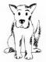
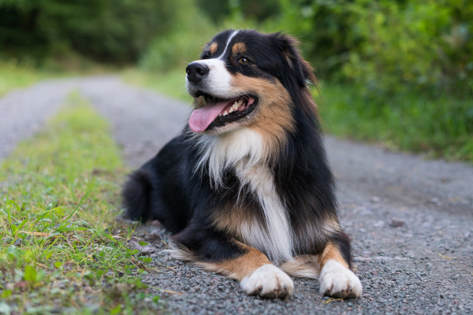
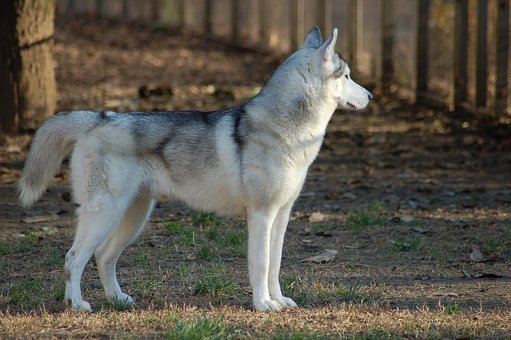

Cani divisi in gruppiA questo gruppo appartengono i cani da pastore e bovari esclusi i bovari svizzeri

AustralianShepherdA questo gruppo appartengono i cani tipo spitz e tipo primitivo

siberianHuskyPer informazioni più precise è possibile visitare il sito dell' ENCI